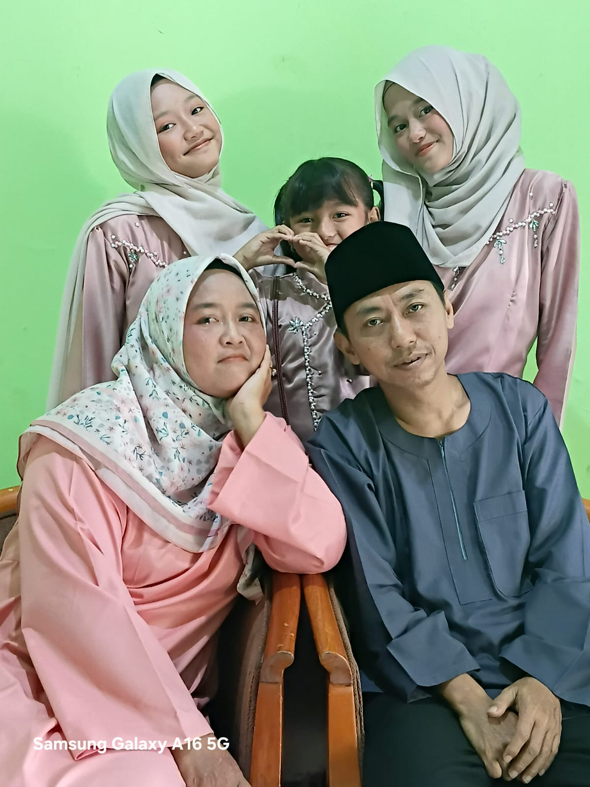

ちち — Chichi
ちちはやさしいです。かぞくをたいせつにします。
Chichi wa yasashii desu. Kazoku o taisetsu ni shimasu.
Ayah saya baik hati. Ayah sangat menyayangi keluarga.
Watashi no Kazoku | Keluargaku

Ini adalah keluarga saya. Saya sangat menyayangi keluarga saya karena mereka selalu memberikan kasih sayang dan dukungan.
Kazoku no Ki
Kazoku no Shoukai
ちちはやさしいです。かぞくをたいせつにします。
Chichi wa yasashii desu. Kazoku o taisetsu ni shimasu.
Ayah saya baik hati. Ayah sangat menyayangi keluarga.
はははやさしくて、いつもわたしをたすけてくれます。
Haha wa yasashikute, itsumo watashi o tasukete kuremasu.
Ibu saya baik hati dan selalu membantu saya. Saya sangat menyayangi ibu saya.
わたしはかぞくがだいすきです。 まいにちたのしくすごします。
Watashi wa kazoku ga daisuki desu. Mainichi tanoshiku sugoshimasu.
Saya sangat menyayangi keluarga. Saya menjalani hari-hari dengan bahagia.
わたしのひとりめのいもうとは、 げんきでいつもえがおです。
Watashi no hitorime no imouto wa, genki de itsumo egao desu.
Ini adalah adik perempuan pertama saya. Dia aktif dan selalu tersenyum.
わたしのふたりめのいもうとは、 あかるくてとてもかわいいです。
Watashi no futarime no imouto wa, akarukute totemo kawaii desu.
Ini adalah adik perempuan kedua saya. Dia ceria dan sangat lucu.